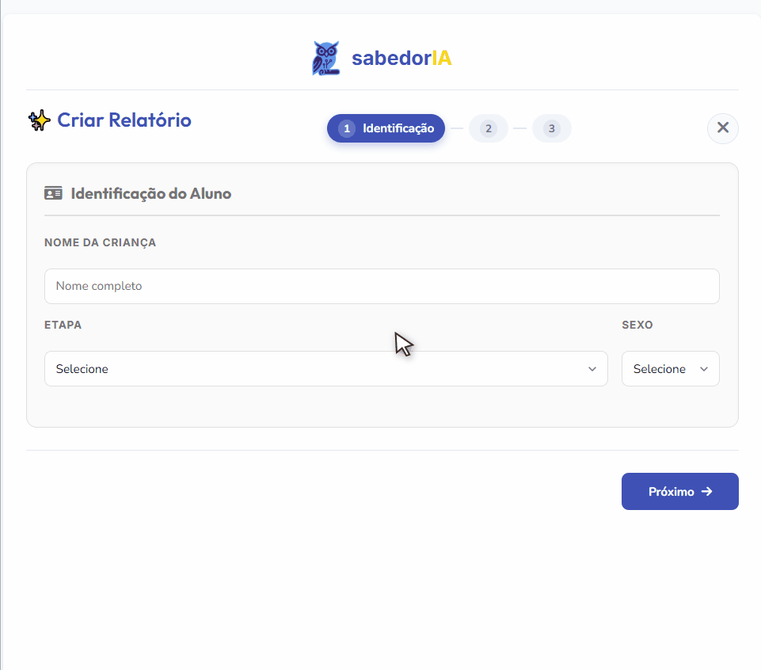

Cada projeto abaixo resolve um problema que eu realmente tive — na minha própria sala de aula, na minha dissertação, ou na minha cidade. Nenhum começou como uma peça de portfólio.
SPEC. 001 — SAAS / EDTECH
SabedorIA
appsabedoria.com.br
Uma plataforma de geração de relatórios que ajuda professores a escrever avaliações de alunos alinhadas à BNCC de forma mais rápida. Construí um banco de descritores de ~190 frases alinhadas ao currículo em 8 categorias, com uma interface de chips clicáveis para pontuar o progresso do aluno — a IA rascunha, o professor decide.

- Stack
- Next.js, Firebase, Vercel
- Status
- Ao vivo, em uso em produção
- Meu papel
- Product design + build completo via IA
SPEC. 002 — SAAS / COMÉRCIO LOCAL
barbearIA
Plataforma de agendamento e retenção
Construída para pequenas barbearias e salões na Baixada Fluminense: agendamento, pagamentos via Pix (webhook), escalando para um bot de WhatsApp autônomo que lida com reagendamento e retenção sozinho — rodando em uma infraestrutura self-hosted de custo quase zero.
- Stack
- Next.js, Firestore, Evolution API
- Status
- Em desenvolvimento, escalando escopo
- Restrição
- Projetado para rodar em *free-tier*
SPEC. 003 — EDTECH / AVALIAÇÃO ADAPTATIVA
Simulando — Fábrica de Quizzes & Avaliação
github.com/bjnobrega/simulando
Um motor autônomo de geração de simulados projetado para transformar matrizes curriculares geradas por IA em simuladores de exames leves, offline e gamificados. Nascido da necessidade real de ajudar meu filho a estudar sem atrito, hoje gera aplicações HTML standalone de página única com feedback pedagógico imediato, temas visuais por disciplina e trilha de reforço voltada para a preparação na véspera da prova.
- Stack
- Vanilla JS, Tailwind CSS, LocalStorage
- Status
- Em produção, escalando para SaaS voltado a famílias
- Diferencial
- HTML executável 100% autônomo e offline
SPEC. 004 — FERRAMENTA DE PESQUISA
Pipeline autônomo de análise
Construído para a minha dissertação (M.Sc.)
Um fluxo de ponta a ponta que pega dados brutos de pesquisa (escala Likert adaptada do ROSE) através de testes de postos sinalizados de Wilcoxon e correlação bisserial de postos, e depois para a codificação qualitativa contra os indicadores de alfabetização científica de Sasseron & Carvalho — com a IA auxiliando a análise em todas as fases.
- Método
- Misto quanti/quali, instrumentos validados
- Status
- Usado para concluir a análise da dissertação
- Impacto
- Rigor estatístico real, sem alucinações de IA
SPEC. 005 — ROBÓTICA EDUCACIONAL & PUBLICAÇÃO ACADÊMICA
Meninas na Robótica — Flipbook Interativo & E-book
bjnobrega.github.io/oficinas-robotica-microbit
O produto educacional oficial da minha defesa de Mestrado na UFRJ: um e-book pedagógico de 83 páginas com cinco oficinas práticas de BBC micro:bit (incluindo a Oficina 00 de formação de multiplicadoras com apoio FAPERJ). Publicado online como flipbook digital interativo e repositório aberto no GitHub para romper barreiras de gênero em STEM.
- Formato
- Flipbook Web Interativo + PDF de 83 páginas
- Público
- Professores da rede pública & turmas femininas
- Status
- Publicado e defendido no PPG ProfiCiências / UFRJ
SPEC. 006 — ACESSIBILIDADE & PRODUTIVIDADE
LoudText
github.com/bjnobrega/loud_text
Um leitor minimalista de texto para voz construído para vencer a exaustão visual na leitura de artigos e documentos acadêmicos densos e volumosos. Prototipado via programação em par com IA, converte textos colados em fala natural e sem distrações, acelerando a compreensão de conteúdos complexos.
- Stack
- React, Vite, Web Speech API
- Status
- Em uso pessoal contínuo, aberto no GitHub
- Origem
- Solução para fadiga cognitiva na leitura de textos longos